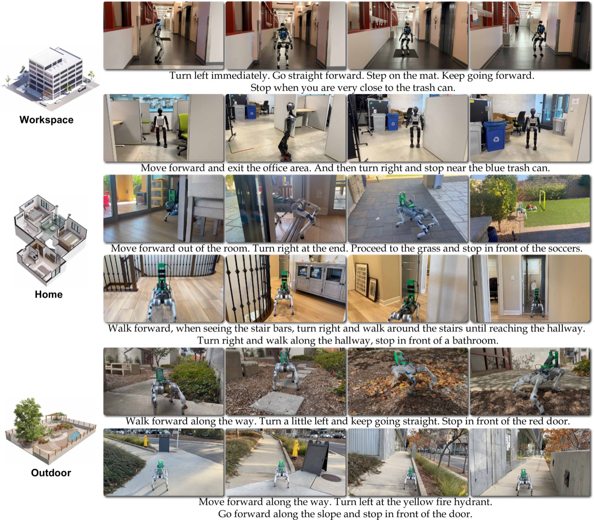

NaVILA: Legged Robot Vision-Language-Action Model for Navigation — 핵심 방법론 분석 (Core Methods Analysis)
1. 개요 (Overview)
1.1 출판 정보 (Publication Information)
- 논문 제목 (Paper Title): NaVILA: Legged Robot Vision-Language-Action Model for Navigation
- 저자 (Authors): An-Chieh Cheng*, Yandong Ji*, Zhaojing Yang*, Zaitian Gongye, Xueyan Zou, Jan Kautz, Erdem Bıyık, Hongxu Yin, Sifei Liu, Xiaolong Wang
- (*: 공동 제1저자)
- 소속 (Affiliation): UC San Diego, USC, NVIDIA
- 발표처 (Published): RSS 2025 (Robotics: Science and Systems)
- DOI: https://doi.org/10.48550/arXiv.2412.04453
- arXiv: https://arxiv.org/abs/2412.04453 (v2, 2025-02-17)
- 프로젝트 페이지: https://navila-bot.github.io
- GitHub (VLA): https://github.com/AnjieCheng/NaVILA (Apache-2.0, 평가/추론 코드 공개 — 학습 코드 및 YouTube 데이터셋 일부 추가 공개 예정)
- GitHub (저수준 로코모션): https://github.com/yang-zj1026/legged-loco
- GitHub (벤치마크): https://github.com/yang-zj1026/VLN-CE-Isaac
- 체크포인트: a8cheng/navila-llama3-8b-8f, a8cheng/navila-siglip-llama3-8b-v1.5-pretrain (Hugging Face)
- 리뷰 일자: 2026-06-29
1.2 연구 목표 (Research Objective)
NaVILA는 Vision-and-Language Navigation(VLN)을 사족·이족 보행 로봇(legged robot)으로 확장하는 연구다. 기존 VLN 연구는 대부분 바퀴형(wheeled) 로봇 또는 이상화된 포인트 에이전트를 가정하여, 자연언어 지시를 "forward / turn / stop"의 이산 행동으로 매핑하는 데 집중했다. 그러나 다리형 로봇은 계단·문턱·좁은 틈·비정형 지형을 통과할 수 있는 잠재력이 있는 대신, 자연언어 지시를 12개 관절의 저수준 토크 명령으로 변환하는 것이라는 새로운 난제를 안는다.
핵심 연구 질문:
"VLM의 언어·공간 추론 능력과 RL 로코모션 정책의 정밀 제어 능력을
하나의 종단형(end-to-end) 모델에 욱여넣지 않고, 어떻게 결합해야
다리형 로봇이 자연언어 지시대로 복잡 지형을 내비게이션할 수 있는가?"
NaVILA의 답은 2-레벨 계층화(hierarchy)다. 고수준 VLA가 시각·언어 입력을 받아 공간 정보를 담은 자연언어 미드레벨 액션(예: "moving forward 75cm", "turn right 30°")을 생성하고, 저수준 시각 로코모션 RL 정책이 이를 실행한다. 이 분리는 세 가지 본질적 이점을 만든다:
| 이점 | 설명 |
|---|---|
| 로봇 교환성(swap-ability) | 동일 VLA + 로봇별 저수준 정책 → Go2(사족), H1·T1(이족) 모두 지원 |
| 데이터 다양성 | 미드레벨이 자연언어이므로 시뮬 외에 YouTube 인간 투어 영상까지 학습 데이터로 활용 |
| 이중 주파수(dual-frequency) | VLA는 저주파(~1Hz)·무겁지만 강력, 정책은 고주파(50Hz)·빠르게 적응 |

Fig.1 고수준 VLA(좌)가 미드레벨 액션을 자연언어로 생성하고, 저수준 정책(우)이 관절 명령으로 실행. 여러 로봇 플랫폼과 호환.2. 문제 정의 (Problem Definition)
2.1 도전과제 (Challenges)
A. 종단형 VLA의 저수준 제어 정밀도 한계
가장 직관적인 접근은 VLM이 곧바로 관절 명령을 출력하는 종단형 VLA다. 그러나 LLM/VLM은 대규모 자연언어·이미지 코퍼스로 사전학습되었기 때문에, 정밀한 연속 제어값(joint torque, 정확한 각속도)을 직접 회귀시키는 데 근본적으로 취약하다.
[종단형 VLA의 구조적 문제]
관측 O_t ──┐
지시 I ──┼──► 단일 VLA ──► 관절 토크 q^d ∈ ℝ^12 (50Hz)
이력 H_t ──┘
문제 1: 주파수 불일치
- VLM 추론: ~1Hz (LLaMA-3 8B, RTX 4090 기준 ~1 FPS)
- 로코모션 제어: 50Hz 필요 (안정적 보행)
→ 종단형은 50Hz로 VLM을 돌릴 수 없음 (200배 느림)
문제 2: 정밀 제어 회귀 부적합
- "좌회전"을 정확히 몇 rad/s, 몇 초로?
- 토큰 예측 모델은 연속값 정밀 회귀가 약함
문제 3: 로봇 종속성
- 종단형은 특정 로봇의 관절 구조에 고정됨
- 다른 로봇으로 옮기려면 전체 재학습 필요
B. 다리형 로봇용 VLN 데이터의 부재
VLN-CE(R2R-CE, RxR-CE)는 Habitat 시뮬레이터에서 고수준 계획(forward/turn/stop)만 다루며, 로봇의 실제 관절 역학·신체 크기·충돌 부피를 반영하지 않는다. 즉 "이론적으로 통과 가능한 경로"가 실제 로봇에게는 불가능한 경우(좁은 틈, 낮은 천장)를 거른다.
[기존 VLN-CE 벤치마크의 한계]
Habitat VLN-CE:
- 에이전트 = 반경 0.18m 실린더 (이상화)
- 행동 = 이산 {forward 0.25m, turn 15°, stop}
- 관절 역학 X, 신체 크기 X, 지형 물리 X
결과: 시뮬에서 100% 성공해도 실제 다리형 로봇은
계단·문턱에서 넘어지거나, 좁은 틈에 끼임
C. 실세계 인간 내비게이션 데이터의 활용 불가
연속 환경 VLN 학습에는 다양한 실세계 내비게이션 궤적이 필요하지만, 라벨링된 실로봇 궤적은 비싸다. 인터넷에는 1인칭 투어 영상이 풍부하나, 이들에는 행동 라벨(어디로 얼마나 이동했는가)이 없다.
2.2 핵심 해결책
NaVILA는 위 세 난제를 계층화 + 자연언어 미드레벨 인터페이스로 동시에 해결한다:
[NaVILA의 3가지 핵심 혁신]
혁신 1: 자연언어 미드레벨 액션 (Language Mid-Level Action)
VLA가 "moving forward 75cm" 같은 공간 정보를 담은
자연언어를 출력 → 정규식 파서로 속도 명령으로 변환
→ VLM의 언어 강점을 그대로 살리면서 정밀 제어를 분리
혁신 2: 시각 로코모션 RL 정책 (Visual Locomotion Policy)
LiDAR 2.5D height map 입력 → PPO 단일 단계 학습
→ 미드레벨 속도 명령을 50Hz로 안정 실행
→ 투명 물체·강한 햇빛에도 강건(LiDAR 기반)
혁신 3: 인간 비디오 + 데이터 블렌드
2,000개 YouTube 투어 영상 → MASt3R 포즈 추정 →
20,000 궤적 + 자연언어 지시 자동 생성
+ 시뮬(R2R/RxR) + 보조태스크 + 일반 VQA 혼합
3. 핵심 방법론 (Core Methods)
3.1 고수준 VLA: 자연언어 미드레벨 액션
기반 모델: VILA(Vision-Language foundation model, SigLIP 비전 인코더 + LLaMA-3 8B). NaVILA는 VILA의 Stage-2 사전학습 가중치로 초기화한 뒤 navigation SFT를 수행한다.
[VLA 추론 흐름]
RGB 프레임 (현재 + 과거)
↓
SigLIP Vision encoder
↓
Visual tokens
↓
MLP projector → Language token space
↓
[Text instruction tokens] + [Visual tokens] → LLaMA-3 8B
↓
자연언어 행동 출력: "moving forward 75cm" / "turn right 30°" / "stop"
↓
Regex parser (action type + numerical argument 추출)
↓
Command velocity (v_x, ω_z, duration)
미드레벨 액션 어휘와 속도 매핑 (논문 본문 기준):
[고정 행동 집합 → 명령 속도]
행동 명령 속도
─────────────────────────────────────
move forward → v_x = 0.5 m/s
turn left → ω_z = +π/6 rad/s (= +30°/s)
turn right → ω_z = -π/6 rad/s (= -30°/s)
stop → 0
수치 인자 해석 (regex 파싱):
"moving forward 75cm"
→ duration = 0.75 m / 0.5 (m/s) = 1.5 s
"turn right 30°"
→ duration = (30°) / (30°/s) = 1.0 s
즉 VLA가 내는 거리/각도 크기는 고정 속도에서의
"지속 시간"으로 변환되어 저수준 정책에 전달된다.
이 설계의 핵심은 공간 정보(거리·각도)를 언어 토큰으로 표현한다는 점이다. VLM은 "75cm 앞으로"라는 표현을 자연언어 학습 분포 안에서 다룰 수 있으므로, 연속 회귀보다 안정적으로 예측한다. 정밀한 속도/토크 변환은 파서와 저수준 정책에 위임된다.
Navigation Prompt Design (현재 vs 과거 프레임 구분)
표준 VILA는 모든 비디오 프레임을 균등 샘플링하여 동등하게 취급한다. NaVILA는 내비게이션의 시간적 구조를 살리기 위해 현재 관측과 과거 관측을 프롬프트 텍스트로 명시 구분한다(특수 토큰 추가 없이):
[NaVILA 프롬프트 구조]
video of historical observations: <frame_1> ... <frame_{t-1}>
current observation: <frame_t>
[task instruction]
샘플링 규칙:
- 가장 최근 프레임 t를 "current observation"으로 고정
- t-1개의 이전 프레임에서 균등 샘플링하되 항상 첫 프레임 포함
- 특수 토큰 없이 자연어 라벨("historical"/"current")만으로
역할 구분 → VILA 사전학습 분포를 깨지 않음
물리적 의미:
과거 프레임 = 지나온 경로 메모리 (어디서 왔는가)
현재 프레임 = 즉각 의사결정 (지금 무엇을 할까)
3.2 인간 비디오 학습 파이프라인 (Human Video Learning)
NaVILA의 가장 독창적인 기여 중 하나는 연속 환경에서 처음으로 라벨 없는 인간 1인칭 투어 영상을 직접 내비게이션 학습 데이터로 전환한 것이다.
[인간 비디오 → 학습 데이터 파이프라인]
2,000 YouTube 1인칭 투어 영상
↓ Entropy-based sampling (대표 프레임 선택)
20,000 궤적(trajectory)
↓ MASt3R (metric 카메라 포즈 추정)
각 프레임의 카메라 포즈 → step-wise 3D actions (Δposition, Δyaw)
↓ 포즈 차분을 미드레벨 액션 어휘로 양자화
("forward Xcm", "turn left/right Y°") 시퀀스
↓ VILA(VLM) 캡셔닝 + LLM 리프레이징
자연언어 지시(instruction) 생성
↓
(video, instruction, action) 학습 쌍
MASt3R로 추정한 metric 카메라 포즈가 핵심이다 — 단순 광류(optical flow)가 아니라 미터 단위 이동량을 복원하므로, "75cm 전진" 같은 거리 정보를 가진 행동 라벨을 자동 생성할 수 있다. 이 파이프라인은 자연 다양성(실세계 카메라 움직임, 다양한 실내외 지형)을 데이터에 주입하여, 시뮬레이션만으로는 얻기 힘든 일반화(특히 outdoor)를 가능케 한다.
3.3 데이터 블렌드 (SFT Data Blend)
NaVILA의 SFT는 4개 데이터 소스를 혼합하여, 내비게이션 능력과 일반 시각-언어 능력을 동시에 유지한다:
[SFT 데이터 블렌드 4종]
① Real video navigation (인간 비디오)
20K YouTube 궤적 (위 3.2 파이프라인 산출물)
② Simulation navigation (R2R-CE, RxR-CE)
- shortest-path follower로 oracle 경로 추종
- 연속 동일 행동 병합(consecutive action merging, 최대 3개)
- 라벨 리밸런싱(label rebalancing) — forward 편향 완화
③ Auxiliary navigation
- EnvDrop 합성 지시
- trajectory summarization (경로 요약)
- ScanQA 3D QA 쌍 (공간 이해 강화)
④ General VQA
일반 이미지-텍스트 QA → 사전학습 지식 보존
② 의 연속 행동 병합·라벨 리밸런싱은 VLN-CE의 oracle 경로가 압도적으로 "forward"에 편향되는 문제를 완화하여, 모델이 turn/stop을 적시에 예측하도록 유도하는 실무적 디테일이다.
[연속 행동 병합(consecutive action merging)의 의미]
원본 oracle 시퀀스 (예):
forward, forward, forward, turn_left, forward, stop
병합 전 학습 라벨 분포:
forward 4 : turn 1 : stop 1 → forward 압도적
NaVILA 병합 (최대 3개 연속 forward 통합):
"forward (×3)" → "moving forward 75cm" 단일 미드레벨 액션
→ 한 번의 VLA 호출이 더 긴 거리를 커버
→ turn/stop 라벨의 상대 비중 상승 → 결정 시점 학습 개선
부수 효과:
- VLA 호출 횟수 감소 → 추론 비용 절감
- 미드레벨 액션의 "거리 인자(75cm)"가 자연스럽게 등장
(단일 forward는 25cm, 3개 병합은 75cm)
이 디테일은 NaVILA의 미드레벨 액션 어휘에 "거리 인자"가 왜 필요한지를 설명한다 — oracle의 다중 연속 전진을 하나의 거리 명령으로 압축하기 위함이다.
3.4 저수준 시각 로코모션 정책 (Visual Locomotion Policy)
플랫폼: Unitree Go2(사족, 18 DoF = 고정 6 base + 제어 12 leg joints), Unitree L1 LiDAR(360°×90° FOV).
입력 표현 — 2.5D Height Map (왜 depth가 아니라 height map인가)
[LiDAR → 2.5D height map 구성]
LiDAR point cloud (360°×90°)
↓ voxel grid 내 "최저값(lowest value within range)" 선택
순간 height map
↓ 5개 연속 LiDAR 프레임에 대해 maximum filter
2.5D height map (로봇 중심, top-down)
왜 RGB/Depth가 아니라 height map?
- RGB/Depth 카메라: 유리창·투명 플라스틱 등 투명 물체 미감지
- 강한 햇빛/저조도에서 depth 센서 불안정
- LiDAR height map: 광 조건에 강건 + 기하 구조 직접 표현
- max filter(5프레임): LiDAR 노이즈/스파스함 평활화
관측 공간 (Actor / Critic 비대칭)
[Actor 관측 (실배포 가용)]
├─ Proprioception (현재): 각속도, 중력 방향, 관절 위치 q, 관절 속도 q̇
├─ Proprioception 이력 (속도 추론용)
├─ Previous action
├─ Height map (2.5D, LiDAR)
└─ Velocity command (VLA에서 생성: v_x, ω_z)
※ 선형 속도(linear velocity)는 actor에 제공 안 함
→ proprioception 이력으로 암묵적 추론
[Critic 관측 (학습 시에만, privileged)]
├─ 위 actor 관측 전부
├─ 선형 속도 (실배포 불가, 학습에서만 제공)
└─ Privileged terrain height scan (지면 정보)
이 비대칭 actor-critic 구조(privileged critic)는 다리형 로코모션 RL의 표준 기법으로, critic이 학습 중 특권 정보로 더 정확한 가치 추정을 하되, 실배포되는 actor는 센서로 얻을 수 있는 정보만 사용한다.
행동 공간 & 변환
Output: 목표 관절 위치 q^d ∈ ℝ^12
↓ stiffness(Kp) / damping(Kd) PD 변환
joint torque τ = Kp·(q^d − q) − Kd·q̇
↓
50Hz 서보 제어
보상 함수 (PPO reward terms, 본문 Table 기준)
[주요 보상 항목과 가중치]
항목 가중치
──────────────────────────────────────
Linear velocity tracking +1.5
Angular velocity tracking +1.5
Z-velocity penalty -2.0
XY angular(roll/pitch) pen. -0.05
Flat orientation -2.0
Joint accelerations -2.5e-7
Energy -2e-5
Body height -5.0
Feet slipping +0.05
핵심: linear/angular velocity tracking(+1.5)이 VLA 명령
속도를 정확히 추종하도록 유도. 나머지는 자세 안정·
에너지 효율·발 미끄러짐 억제 등 안정 보행 항목.
단일 단계(single-stage) PPO — distillation 회피
[Single-stage vs 2-stage distillation]
기존 다수 방법: teacher(privileged) 학습 → student로 distill
단점: 2단계, 느림, student가 teacher 분포에 갇힘
NaVILA: 단일 단계 PPO + privileged critic
- actor가 환경과 직접 상호작용하며 학습
- 별도 distillation 단계 없음 → 빠름
- 학습 속도: 60K+ FPS (Isaac Lab, ray-casting LiDAR 시뮬)
도메인 랜덤화 (sim-to-real):
body mass [-3.0, 3.0]
friction [0.4, 4.0]
motor strength [0.9, 1.1]
4. 시스템 아키텍처 (System Architecture)
[NaVILA 전체 파이프라인 — 이중 주파수 계층]
═══════════════ 고수준 (VLA, ~1Hz) ═══════════════
RGB 프레임 (current + historical)
│
▼
SigLIP encoder → MLP projector
│
Text instruction ──┐
│ │
▼ ▼
┌──────────────────────────────┐
│ LLaMA-3 8B (VILA SFT) │
└───────────────┬──────────────┘
│
▼
"moving forward 75cm, turn right 30°"
│
▼
Regex parser
│
▼
Velocity command (v_x=0.5, ω_z, duration)
│
══════════════════╪═══════════════════════════════
│ (저주파 → 고주파 인터페이스)
══════════════════▼═══════════ 저수준 (Policy, 50Hz) ═══
┌─────────────────────────────────────────┐
│ Actor 관측: │
│ ├ Proprioception (현재 + 이력) │
│ ├ Height map (LiDAR 2.5D, max-filtered) │
│ ├ Previous action │
│ └ Velocity command (위에서 전달) │
└────────────────────┬────────────────────┘
│ PPO actor (MLP/CNN)
▼
q^d ∈ ℝ^12 (목표 관절 위치)
│ PD: τ = Kp(q^d−q) − Kd·q̇
▼
50Hz 서보 → 로봇 모션
Critic(학습 전용): actor 관측 + 선형속도 + privileged
terrain height scan
4.1 데이터 흐름 설명
- 상향(perception → command): RGB와 지시가 VLA에 들어가 ~1Hz로 자연언어 미드레벨 액션이 나오고, 파서가 이를 속도 명령으로 바꾼다.
- 하향(command → motion): 저수준 정책이 그 속도 명령을 50Hz로 추종하며, LiDAR height map으로 지형/장애물을 회피한다.
- 이중 주파수의 의미: VLA의 한 번의 "forward 75cm"가 저수준 정책의 수십 스텝(1.5초 × 50Hz ≈ 75 스텝)에 걸쳐 안정적으로 실행된다. VLM의 느린 추론이 보행의 실시간성을 깨지 않는다.
- 로봇 교환성의 메커니즘: 인터페이스가 자연언어/속도 명령으로 추상화되어 있으므로, 새 로봇(H1, T1)은 저수준 정책만 교체하면 동일 VLA를 재사용한다.
5. 실험 결과 및 성능 (Experimental Results)
5.1 데이터셋 (Datasets)
| 데이터셋 | 환경 | 역할 | 특징 |
|---|---|---|---|
| R2R-CE | Habitat + Matterport3D | VLA 학습/평가 | 연속 환경 실내 탐색, Val-Unseen 1,839 에피소드 |
| RxR-CE | Habitat + Matterport3D | VLA 학습/평가 | 다국어(영/힌디/텔루구), 상세한 긴 지시 |
| ScanQA | ScanNet 3D scan | 보조(공간 이해) | multi-view RGB로 3D 장면 질의응답 |
| YouTube 인간 투어 | 실세계 1인칭 영상 | VLA 학습 | 2,000 영상 → 20,000 궤적 (라벨 자동 생성) |
| VLN-CE-Isaac | Isaac Sim | 저수준 포함 평가 | 본 논문이 제안한 신규 벤치마크, 관절 역학 반영 |
5.2 평가 지표 (Evaluation Metrics)
| 지표 | 풀네임 | 의미 |
|---|---|---|
| NE (↓) | Navigation Error | 종단 위치 ~ 목표 거리(m) |
| OS (↑) | Oracle Success | 경로 중 어느 시점에서든 목표 근방 도달 비율 |
| SR (↑) | Success Rate | 종단 위치가 목표 근방(3m)인 비율 |
| SPL (↑) | SR weighted by Path Length | 효율 가중 성공률 |
| nDTW (↑) | normalized Dynamic Time Warping | 참조 경로 추종도 (RxR) |
ScanQA는 캡션 지표(Bleu-4/Rouge/CIDEr/Meteor/EM)를 사용한다.
5.3 정량적 결과 (Quantitative Results)
Table I. R2R-CE Val-Unseen (VLN-CE 표준 벤치마크)
| 방법 | 입력 | NE↓ | OS↑ | SR↑ | SPL↑ |
|---|---|---|---|---|---|
| HPN+DN | Pano+Depth+Odo | 6.31 | 40.0 | 36.0 | 34.0 |
| ETPNav | Pano+Depth+Odo | 4.71 | 65.0 | 57.0 | 49.0 |
| BEVBert | Pano+Depth+Odo | 4.57 | 67.0 | 59.0 | 50.0 |
| HNR | Pano+Depth+Odo | 4.42 | 67.0 | 61.0 | 51.0 |
| NaVid (선행 SOTA, RGB) | S.RGB | 5.47 | 49.0 | 37.0 | 35.0 |
| NaVILA | S.RGB only | 5.22 | 62.5 | 54.0 | 49.0 |
핵심:
- 단안 RGB만으로 Panoramic+Depth+Odometry를 합친 방법들과 경쟁하는 성능.
- 동일 RGB 단일 입력 계열에서 선행 SOTA NaVid 대비 SR 37.0 → 54.0 (약 +17%p), NE 5.47 → 5.22.
- SPL 49.0으로 Depth+Odo를 쓰는 ETPNav(49.0)와 동급 효율.
Table II. RxR-CE Val-Unseen 및 Cross-dataset 일반화
RxR Val-Unseen (정상):
NaVILA: NE=6.77, SR=49.3%, SPL=44.0%, nDTW=58.8
Cross-dataset (R2R로만 학습 → RxR 평가):
NaVid : NE=8.41, OS=34.5, SR=23.8%, SPL=21.2
NaVILA: NE=8.78, OS=46.8, SR=34.3%, SPL=28.2 (+10%p SR)
cross-dataset에서 NaVid 대비 SR +10%p는, 인간 비디오 학습이 데이터셋 간 일반화(공간 이해의 보편성)를 강화했음을 시사한다.
Table III. ScanQA Val (공간 장면 이해, 3D 입력 없이 2D RGB만)
| 모델 | Bleu-4 | Rouge | CIDEr | Meteor | EM |
|---|---|---|---|---|---|
| 3D-ViTA (task-specific) | 10.4 | 35.7 | 69.6 | 13.9 | 22.4 |
| Scene-LLM (3D LMM) | 12.0 | 40.0 | 80.0 | 16.6 | 27.2 |
| LEO (3D LMM) | 13.2 | 49.2 | 101.4 | 20.0 | 24.5 |
| NaVILA (8 frames) | 14.8 | 46.4 | 95.1 | 18.7 | 27.0 |
| NaVILA (64 frames) | 16.9 | 49.3 | 102.7 | 20.1 | 28.6 |
3D 포인트클라우드 입력을 쓰는 전용 3D LMM(LEO 등)을 2D RGB 멀티프레임만으로 능가한다(64프레임 CIDEr 102.7 > LEO 101.4). 데이터 블렌드의 ScanQA 보조 태스크가 효과적임을 보인다.
Table IV. VLN-CE-Isaac (신규 벤치마크, 저수준 관절 제어 포함)
| 로봇 | 관측 | NE↓ | OS↑ | SR↑ | SPL↑ |
|---|---|---|---|---|---|
| Go2 Oracle | - | 5.25 | 59.8 | 51.3 | 46.9 |
| Go2 NaVILA-Blind | Proprio | 6.03 | 49.0 | 36.2 | 33.3 |
| Go2 NaVILA-Vision | Proprio+LiDAR | 5.49 | 58.7 | 50.2 | 45.5 |
| H1 Oracle | - | 5.25 | 59.8 | 51.3 | 46.9 |
| H1 NaVILA-Blind | Proprio | 7.67 | 33.3 | 24.4 | 21.0 |
| H1 NaVILA-Vision | Proprio+LiDAR | 5.86 | 54.6 | 45.3 | 40.3 |
- Vision(LiDAR height map)의 효과: Go2 +14%p SR (36.2→50.2), H1 +21%p SR (24.4→45.3).
- 이족 H1이 사족 Go2보다 어렵다(자유도·신체 크기·균형). Vision의 이득이 H1에서 더 큰 것은, 균형이 까다로운 로봇일수록 지형 인지가 중요함을 보여준다.
- Vision 정책이 Oracle(상한)에 근접(Go2 50.2 vs 51.3)한다.
Table V. 저수준 정책 비교 (vs ROA 계열)
| 방법 | Linear Vel Error↓ | Angular Vel Error↓ | Collision Rate↓ |
|---|---|---|---|
| ROA (w/ BC Loss) | 0.189 | 0.152 | 3.25% |
| ROA | 0.161 | 0.152 | 3.09% |
| NaVILA | 0.066 | 0.113 | 0.81% |
속도 추적 오차 2~3배 개선, 충돌률 약 1/4(3.09%→0.81%). 단일 단계 PPO + height map 정책이 명령 추종·안전성 모두에서 우수함을 입증.
[저수준 정책 메트릭의 실배포 의미]
Linear velocity error 0.066:
- VLA가 "0.5 m/s"를 명령하면 실제 ~0.434~0.566 m/s로 추종
- 0.161(ROA)이면 ±0.16 오차 → "75cm 전진"이 실제로는
59~91cm가 되어 누적 위치 오차 발생
- NaVILA의 낮은 오차 → 미드레벨 거리 명령의 신뢰성 확보
(계층화 인터페이스가 작동하려면 정책이 명령을 정확히
추종해야 함 — 그래야 VLA의 "75cm"가 의미를 가짐)
Collision rate 0.81%:
- height map 기반 장애물 인지로 충돌 최소화
- LiDAR가 RGB-D 대비 투명/광 조건에 강건 → 실세계 충돌 감소
이 표는 NaVILA 계층화의 숨은 전제를 드러낸다 — 저수준 정책의 명령 추종 정확도가 높아야만 자연언어 미드레벨 인터페이스가 신뢰성 있게 작동한다. 속도 오차가 크면 VLA가 아무리 정확한 거리를 내도 실제 이동이 어긋나기 때문이다.
ScanQA 프레임 수 스케일링 (8 → 64 frames)
프레임 수 Bleu-4 CIDEr
─────────────────────────────
8 frames 14.8 95.1
64 frames 16.9 102.7 (+2.1 / +7.6)
해석: 멀티프레임 컨텍스트를 늘리면 3D 장면 이해가 향상.
2D RGB만으로도 프레임 수를 늘려 3D 정보를 보완 가능 →
NaVILA의 "Depth 없이 RGB만" 전략을 뒷받침하는 증거.
5.4 리얼월드 실험 (Real-world Experiments)
플랫폼: Unitree Go2(사족), Unitree H1·Booster Dynamics T1(이족). 태스크: 25개 자연언어 지시. 환경: Workspace / Home / Outdoor 3종, Simple·Complex 구분.
[실세계 성공률 (Unitree Go2, 25 instructions)]
전체 평균 SR: 88%
환경별:
환경 Simple SR Complex SR
─────────────────────────────────
Workspace 80% 73%
Home 73% 57%
Outdoor 83% 50%
GPT-4o(베이스라인) 대비:
- NaVILA가 NE·SR 모두 우세, 특히 Complex 태스크에서 격차 큼
- (예) Workspace NE: NaVILA 1.29 vs GPT-4o 2.01
로봇 교환성 검증:
- Go2용으로 학습한 VLA를 H1/T1(이족)에 재학습 없이 적용
- Booster T1은 카메라 마운팅 위치까지 다르게 두고 테스트
- 일관되게 GPT-4o 능가 → 플랫폼 일반화 확인
Simple 태스크에서 outdoor가 비교적 높고(83%) Complex에서 낮은(50%) 패턴은, 인간 비디오 학습이 단순 outdoor 내비에 도움을 주지만 복잡한 다단계 지시에는 한계가 있음을 보인다.
6. 핵심 기여점 (Key Contributions)
기여 1: 자연언어 미드레벨 인터페이스를 통한 VLA-로코모션 계층화
NaVILA의 본질적 기여는 고수준 추론(VLA)과 저수준 제어(RL 정책)를 "공간 정보를 담은 자연언어"라는 인터페이스로 분리한 것이다. 이는 (a) VLM의 언어 강점을 보존하고, (b) 50Hz 제어를 VLM 주파수에서 해방시키며, (c) 인터페이스 추상화로 로봇 교환성을 확보한다. 종단형 VLA가 겪는 "정밀 제어 회귀 + 주파수 + 로봇 종속성" 3중 문제를 한 번에 해결한다.
기여 2: 라벨 없는 인간 비디오의 내비게이션 데이터화
2,000개 YouTube 1인칭 투어 → MASt3R metric 포즈 → 20,000 궤적 + 자동 지시 생성. 연속 환경 VLN에서 인간 비디오를 직접 학습에 쓴 최초 사례로, cross-dataset 일반화(+10%p)와 outdoor 성능에 기여한다.
기여 3: VLN-CE-Isaac 벤치마크
기존 Habitat VLN-CE가 무시한 로봇 관절 역학·신체 크기·지형 물리를 Isaac Sim 고충실도 시뮬로 반영한 신규 벤치마크. Go2/H1 등 실제 로봇으로 평가 가능하여, "시뮬에선 되는데 실로봇은 안 되는" 갭을 줄인다.
기여 4: 강건한 단일 단계 시각 로코모션 정책
LiDAR 2.5D height map + 단일 단계 PPO(privileged critic) 정책으로, 속도 추종 오차 2~3배·충돌률 1/4 개선. 투명 물체·광 조건에 강건하고 60K+ FPS로 효율 학습.
기여 5: VLN-CE SOTA + 실로봇 88% 성공률
단안 RGB만으로 R2R Val-Unseen SR 54.0%(NaVid 대비 +17%p), 실세계 3환경 평균 88% 성공률을 달성하며 다리형 VLN의 실현 가능성을 입증.
7. 구현 상세 (Implementation Details)
7.1 고수준 VLA
[VLA 하이퍼파라미터]
기반 모델 : VILA (SigLIP + LLaMA-3 8B), Stage-2 가중치 초기화
입력 프레임 : current 1 + historical (균등 샘플, 첫 프레임 포함)
입력 모달 : 단안 RGB only (Depth/Odometry 불사용)
출력 : 자연언어 행동 → regex parser
SFT 데이터 : 인간비디오 + R2R/RxR + 보조 + 일반 VQA
학습 하드웨어 : 4× NVIDIA A100 노드, instruction FT ~18시간
추론 : ~1 FPS (단일 RTX 4090)
최적화 : AWQ W4A16 양자화 → 메모리 1/2, 속도 +40%
7.2 저수준 로코모션 정책
[정책 하이퍼파라미터]
로봇 : Unitree Go2 (12 제어 관절), Unitree L1 LiDAR
입력 : Proprio(현재+이력) + height map + prev action + cmd vel
(선형속도는 actor 미제공, critic만 privileged)
height map : LiDAR 360°×90°, voxel 최저값, 5프레임 max filter
행동 : q^d ∈ ℝ^12 → PD(Kp,Kd) → 토크, 50Hz
알고리즘 : PPO, 단일 단계(distillation 없음)
보상 : lin/ang vel tracking(+1.5), z-vel(-2.0),
flat orient(-2.0), body height(-5.0) 등
도메인 랜덤화 : mass[-3,3], friction[0.4,4.0], motor[0.9,1.1]
학습 효율 : 60K+ FPS (Isaac Lab, ray-casting LiDAR)
7.3 명령 속도 매핑(재확인)
move forward → 0.5 m/s, turn ± → ±π/6 rad/s, stop → 0
"forward Xcm" → duration = X/100 / 0.5 [s]
"turn Y°" → duration = Y / 30 [s]
8. 고급 주제 (Advanced Topics)
8.1 확장성 분석
로봇 교환성의 일반화 한계: NaVILA는 Go2(사족)→H1/T1(이족) 전이를 보였으나, 모든 전이는 "저수준 정책 교체 + 동일 VLA"를 가정한다. 그러나 미드레벨 액션 어휘(forward/turn/stop)와 고정 속도(0.5 m/s)는 모든 로봇에 동일하므로, 보폭·최대 속도가 크게 다른 로봇(소형 사족 vs 대형 이족)에서 "75cm"의 의미가 달라질 수 있다. 실험에서 H1/T1 전이 시 5~10% 성능 저하가 관찰된 것은 이 인터페이스 경직성의 비용으로 해석할 수 있다.
더 강력한 VLM으로의 확장: 현재 VILA(LLaMA-3 8B) 기반이며, 미드레벨 인터페이스는 백본에 독립적이다. 더 강력한 VLM으로 교체 시 미드레벨 액션 품질(특히 복잡 지시 분해)이 향상될 여지가 크다. 실제로 후속 연구 AwareVLN은 NaVILA의 SFT 가중치(navila-llama3-8b-8f)를 기반으로 추론 모듈을 얹어 R2R SR을 54.0→65.4%로 끌어올렸다 — NaVILA가 다리형 VLN의 토대 모델 역할을 하고 있음을 보여준다.
8.2 한계점 (Limitations)
한계 1: 미드레벨 액션 표현의 경직성
고정 행동 집합 {forward, turn L/R, stop} + 고정 속도(0.5 m/s):
- 대각선 이동 불가 (forward + turn은 순차 실행)
- 가변 속도 미지원 ("75cm"는 거리일 뿐, 속도는 항상 0.5 m/s)
- 좁은 통로에서 0.5 m/s가 너무 빠를 수 있음
- "forward 50cm, turn left 30°"의 순차/병렬 해석 모호
한계 2: VLA-정책 간 명령 충돌 처리 부재
VLA가 "앞으로 75cm"를 내렸는데 height map에 장애물이 있으면? 저수준 정책은 보행 안정/회피는 하지만, VLA 명령 자체의 오류(hallucination)를 교정하는 명시적 메커니즘이 없다. 두 모듈의 분리는 모듈성을 주지만, 불확실성 보정·충돌 해소 인터페이스가 미비하다.
한계 3: Height map의 2.5D 정보 손실
top-down 2.5D 투영은 수직 구조(오버행, 낮은 천장 통로)와 계단의 단 깊이/각도 정보를 일부 잃는다. 이족 로봇이 사족보다 어려운 이유(균형 + 신체 높이)에 대한 height map 기여도 분해가 부족하다.
한계 4: 실세계 검증 규모
25개 지시 × 3회 ≈ 75 에피소드로 통계적 표본이 작고, 신뢰구간/표준편차 보고가 부족하다. 비·눈·저조도 등 다양한 조건, 모래·자갈 등 비정형 지형은 미검증이다.
한계 5: 인간 비디오 라벨의 잡음
MASt3R 포즈 추정 + VLM 캡션으로 자동 생성한 라벨은 포즈 드리프트·캡션 환각이 누적될 수 있다. 자동 라벨 품질이 학습에 미치는 영향에 대한 정량 분석이 제한적이다.
8.3 향후 연구 방향
방향 1: 가변 속도/연속 미드레벨 액션
거리뿐 아니라 속도/곡률을 자연언어로 표현 → 부드러운 경로
방향 2: VLA↔정책 양방향 인터페이스
정책의 지형 인지/실패 신호를 VLA에 되먹임 → 명령 재계획
방향 3: 추론 증강 (AwareVLN류)
미드레벨 생성 전 자기인식 추론 삽입 → 복잡 지시 분해 강화
방향 4: 3D-aware 저수준 표현
2.5D height map → 3D voxel/semantic → 계단·오버행 처리
방향 5: 대규모 실세계 벤치마크
다양한 로봇·지형·조건의 표준화된 실세계 평가 프로토콜
9. 비교 분석 (Comparative Analysis)
비교 대상은 같은 VLN 트랙의 인접 선행/후속 리뷰 논문들이다: StreamVLN(ICRA 2026) — 동일하게 Go2 실배포된 RGB VLN VLA, NavDP(ICRA 2026) — 시뮬-투-리얼 내비게이션 정책(저수준 제어 관점 비교), AwareVLN(CVPR 2026) — NaVILA를 기반 모델로 삼은 직접 후속 연구.
9.1 기존 리뷰 논문과의 비교
| 특성 | NaVILA (RSS 2025) | StreamVLN (ICRA 2026) | NavDP (ICRA 2026) | AwareVLN (CVPR 2026) |
|---|---|---|---|---|
| 핵심 아이디어 | VLA→자연언어 미드레벨→로코모션 계층 | SlowFast 스트리밍 컨텍스트 | Diffusion 정책 + privileged guidance | 선택적 자기인식 추론 |
| 입력 | 단안 RGB | 단안 RGB | RGB-D | 단안 RGB |
| 저수준 제어 통합 | ✅ (12-DoF RL 정책) | ❌ (고수준 행동만) | ✅ (MPC 추적) | ❌ |
| R2R-CE SR | 54.0% | 56.9% | N/A(지시기반 아님) | 65.4% |
| RxR-CE SR | 49.3% | 52.9% | N/A | 67.6% |
| 실세계 | ✅ Go2 + H1/T1 이족 | ✅ Go2 | ✅ 다종 로봇 zero-shot | ✅ 복도/가정/사무실 |
| 다리형 로봇 | ✅ 사족+이족 | 사족(고수준) | 로봇 독립 정책 | ❌ |
| 인간 비디오 학습 | ✅ (20K 궤적) | ❌ | ❌ | (NaVILA 상속) |
| 코드 | ✅ Apache-2.0(일부 예정) | Project Page | ✅ | ✅ Apache-2.0 |
| 기반 모델 | VILA(LLaMA-3 8B) | Qwen2-VL | (확산, 비-LLM) | NaVILA(LLaMA-3 8B) |
9.2 장단점 분석
NaVILA의 장점:
- 다리형 전체 스택: 고수준 언어 추론부터 12-DoF 관절 제어까지 통합한 유일한 계열 — StreamVLN/AwareVLN은 고수준 행동까지만, NavDP는 지시 기반이 아님.
- 인간 비디오 데이터화: 라벨 없는 인터넷 영상을 학습 데이터로 전환하는 확장 가능한 파이프라인(20K 궤적). 후속 연구가 갖지 못한 자산.
- 로봇 교환성: 자연언어/속도 인터페이스로 사족↔이족 전이를 재학습 없이 입증.
- 신규 벤치마크 기여: VLN-CE-Isaac으로 분야 전체의 평가 충실도를 높임.
NaVILA의 단점:
- 순수 VLN 성능은 후속에 추월: R2R SR 54.0%는 StreamVLN(56.9%)·AwareVLN(65.4%)에 뒤진다. NaVILA의 가치는 절대 성능보다 "다리형 전체 스택 + 데이터 파이프라인"이라는 토대에 있다.
- 미드레벨 인터페이스 경직성: 고정 행동·속도로 대각선/가변속도 불가, 명령 충돌 해소 부재(§8.2).
- 실세계 표본 규모: 75 에피소드, 신뢰구간 미보고.
StreamVLN 대비:
- StreamVLN은 SlowFast 컨텍스트로 저지연(0.27s/4액션)·장기 컨텍스트에 강점. 순수 VLN SR도 약간 높다(R2R 56.9 vs 54.0).
- 그러나 StreamVLN은 고수준 행동까지만 다루고 12-DoF 로코모션 학습/평가는 없다. NaVILA는 "언어→관절"의 완전한 사슬과 인간 비디오 학습을 제공한다 → 상호보완: StreamVLN의 효율적 컨텍스트 모델링을 NaVILA의 미드레벨 인터페이스 위에 얹으면 저지연 다리형 VLN이 가능.
NavDP 대비:
- NavDP는 지시(언어) 기반이 아니라 PointNav/ImageNav/Exploration용 확산 정책으로, sim-only 학습 후 zero-shot sim-to-real을 달성. 저수준 제어 철학(privileged guidance)이 NaVILA의 privileged critic와 유사하다.
- 차이: NaVILA는 언어 지시 + 다리형 관절 제어, NavDP는 언어 없는 일반 내비 + 로봇 독립 궤적. NavDP의 확산 정책을 NaVILA의 저수준 정책으로 대체하면 연속 행동 공간 다리형 VLN(§8.3 방향1)으로 갈 수 있다.
AwareVLN 대비 (직접 후속):
- AwareVLN은 NaVILA의 SFT 가중치(navila-llama3-8b-8f)를 기반 모델로 사용하여, 선택적 자기인식 추론 모듈만 추가해 R2R SR 54.0→65.4%(+11.4%p)를 달성. NaVILA가 후속 VLN 연구의 백본 토대임을 직접 증명한다.
- 단, AwareVLN은 NaVILA의 저수준 로코모션 정책(다리형 관절 제어)은 계승하지 않았다 — 순수 고수준 VLN에 집중. 즉 NaVILA의 "다리형 전체 스택" 기여는 여전히 독자적이다.
9.3 실적용 가능성 평가
추천 시나리오: 다리형 로봇이 필요한 비정형 실내외 내비게이션
(계단·문턱·좁은 공간이 있는 가정/사무/실외 안내·순찰)
강점:
- 단안 RGB → 저비용 카메라로 고수준 동작
- LiDAR height map → 광 조건·투명 물체에 강건한 저수준 제어
- 사족·이족 모두 지원 (플랫폼 선택 유연)
배포 전 보완 과제:
- 복잡 지시 성공률(outdoor complex 50%) → 실서비스엔 부족
- VLA hallucination 안전 가드 필요
- 가변 속도/충돌 회피 우선순위 명시
- 대규모 실세계 검증 (현 75 에피소드)
9.4 연구 방향성 평가
NaVILA는 VLN 연구를 "포인트 에이전트 고수준 계획"에서 "다리형 로봇의 언어→관절 전체 스택"으로 끌어내린 분기점이다. 자연언어 미드레벨 인터페이스는 이후 다리형 VLN의 사실상 표준 설계가 되었고, 인간 비디오 데이터화·VLN-CE-Isaac 벤치마크는 분야 인프라로 남았다. 후속 StreamVLN/AwareVLN이 순수 VLN 성능을 끌어올리는 동안, NaVILA의 기여는 "다리형 실로봇으로의 다리(bridge)"라는 점에서 계속 참조된다.
10. 참고 문헌 (References)
- Cheng et al. (2025). NaVILA: Legged Robot Vision-Language-Action Model for Navigation. RSS 2025. arXiv:2412.04453.
- Lin et al. (2024). VILA: On Pre-training for Visual Language Models. CVPR 2024.
- Anderson et al. (2018). Vision-and-Language Navigation: Interpreting visually-grounded navigation instructions in real environments. CVPR 2018.
- Krantz et al. (2020). Beyond the Nav-Graph: Vision-and-Language Navigation in Continuous Environments. ECCV 2020.
- Ku et al. (2020). Room-Across-Room: Multilingual VLN with dense spatiotemporal grounding. EMNLP 2020.
- Zhang et al. (2025). NaVid: Video-based VLM plans the next step for VLN. RSS 2024/2025.
- An et al. (2023). ETPNav: Evolving Topological Planning for VLN-CE. TPAMI 2023.
- Hong et al. (2023). BEVBert: Multimodal Map Pre-training for Language-guided Navigation. ICCV 2023.
- Leroy et al. (2024). Grounding Image Matching in 3D with MASt3R. ECCV 2024.
- Wei et al. (2026). StreamVLN: Streaming VLN via SlowFast Context Modeling. ICRA 2026. arXiv:2507.05240.
- Cai et al. (2026). NavDP: Learning Sim-to-Real Navigation Diffusion Policy with Privileged Information Guidance. ICRA 2026. arXiv:2505.08712.
- Guo et al. (2026). AwareVLN: Reasoning with Self-awareness for VLN. CVPR 2026.
- Azar et al. (2024). Learning robust perceptive locomotion (privileged actor-critic 계열 참고).
- Schulman et al. (2017). Proximal Policy Optimization Algorithms. arXiv:1707.06347.
11. 결론 (Conclusion)
혁신성 평가
NaVILA는 Vision-Language Navigation을 다리형 로봇의 실제 관절 제어까지 잇는 전체 스택을 처음으로 종단 검증한 연구다. 핵심 통찰은 단순하지만 강력하다 — 고수준 VLA와 저수준 RL 정책을 "공간 정보를 담은 자연언어 미드레벨 액션"이라는 인터페이스로 분리하면, VLM의 언어 강점·실시간 제어·로봇 교환성을 동시에 얻을 수 있다. 이 설계는 종단형 VLA가 겪는 정밀 제어 회귀·주파수 불일치·로봇 종속성 문제를 한 번에 우회한다.
실용적 의의
단안 RGB만으로 R2R-CE SR 54.0%(선행 RGB SOTA NaVid 대비 +17%p)를 달성하고, 실세계 3환경에서 평균 88% 성공률을, 사족 Go2와 이족 H1/T1에서 재학습 없는 교환성을 보였다. LiDAR height map 기반 저수준 정책은 속도 추종 오차를 2~3배, 충돌률을 1/4로 줄여 실배포 신뢰성을 높였다. 또한 라벨 없는 YouTube 영상 20,000 궤적을 자동 학습 데이터로 전환하는 파이프라인과 관절 역학을 반영한 VLN-CE-Isaac 벤치마크는 분야의 지속 가능한 인프라로 남는다.
향후 연구 방향
가장 중요한 과제는 미드레벨 인터페이스의 경직성 완화(가변 속도·연속 행동·VLA↔정책 양방향 피드백)와 대규모 실세계 검증이다. 순수 VLN 성능 자체는 후속 StreamVLN·AwareVLN이 이미 추월했으나, AwareVLN이 NaVILA의 가중치를 기반 모델로 삼아 SR을 65.4%까지 끌어올린 사실은 NaVILA가 다리형 VLN의 토대 모델(foundation)임을 역설적으로 증명한다.
[NaVILA 종합 평가]
혁신성 : ⭐⭐⭐⭐⭐ (다리형 언어→관절 전체 스택 + 인간비디오 학습)
기술 완성도 : ⭐⭐⭐⭐ (계층화 설계 견고, 저수준 정책 정량 우수)
실험 규모 : ⭐⭐⭐⭐ (R2R/RxR/ScanQA/Isaac/실로봇 포괄)
실용성 : ⭐⭐⭐⭐ (단안 RGB, 코드 공개, 사족+이족 교환성)
한계 : ⭐⭐⭐ (미드레벨 경직성, 실세계 표본 작음)
종합 : Excellent — 다리형 VLN의 분기점이 된 RSS 2025 토대 연구